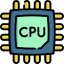
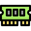
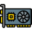
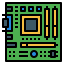
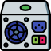
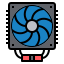

¿Cómo funciona?
01 · CAPTURA DE IMAGEN
El módulo de cámara integrado en los lentes captura imágenes del componente de hardware en tiempo real desde el punto de vista del usuario.
02 · PROCESAMIENTO IA
El modelo de inteligencia artificial analiza la imagen y clasifica el componente detectado entre CPU, RAM, GPU, PLACA MADRE, PSU, FAN, SSD o HDD.
03 · TRANSMISIÓN Wi-Fi
Los datos del componente identificado se transmiten de forma inalámbrica a través de Wi-Fi hacia la plataforma web.
04 · VISUALIZACIÓN OLED
La micro-pantalla OLED integrada en los lentes muestra el resultado del reconocimiento directamente al usuario sin interrumpir su visión.
05 · PLATAFORMA WEB
La página web recibe los datos y despliega información detallada del componente.
¿Qué componentes reconoce?
El modelo de visión artificial ha sido entrenado para identificar los siguientes ocho componentes del área de mantenimiento de computadoras.






¿Qué problema resuelve?
IDENTIFICACIÓN EN TIEMPO REAL
Elimina la dificultad de reconocer componentes técnicos en laboratorios de mantenimiento, actuando como recurso didáctico que reduce errores de identificación.
APRENDIZAJE INTERACTIVO
Fomenta un aprendizaje más interactivo, práctico y accesible. Convierte el hardware en algo fácil de comprender para cualquier estudiante del área técnica.
AGILIZACIÓN DEL PROCESO
Reduce el tiempo de identificación mediante reconocimiento automatizado, permitiendo a estudiantes y docentes enfocarse en el aprendizaje real.
CONECTIVIDAD TOTAL
Integración completa entre los lentes y la plataforma web a través de Wi-Fi, permitiendo acceso instantáneo a información detallada de cada componente.
PÚBLICO OBJETIVO
Diseñado para estudiantes y docentes del área técnica e informática. Ideal para instituciones con laboratorios de mantenimiento de equipos.
IA EN EL NÚCLEO
Modelo de visión artificial entrenado específicamente para el reconocimiento de ciertos componentes del hardware, con alta precisión para los laboratorios.
Reconocimiento en tiempo real
Stack Tecnológico
Las mentes detrás de GlassIA
ADRIANA CEDILLO
CO-FUNDADORA · DESARROLLADORA
Estudiante de tercero del área técnica e informática, apasionada por la inteligencia artificial y el desarrollo de tecnología educativa innovadora.
adriana.cedillom.est@uets.edu.ec
3.º E1 · 2026VALENTINA CÁCERES
CO-FUNDADORA · INVESTIGADORA
Estudiante de tercero del área técnica e informática, enfocada en el diseño de experiencias de aprendizaje y sistemas de reconocimiento visual.
emilia.astudilloc.est@uets.edu.ec
3.º E1 · 2026